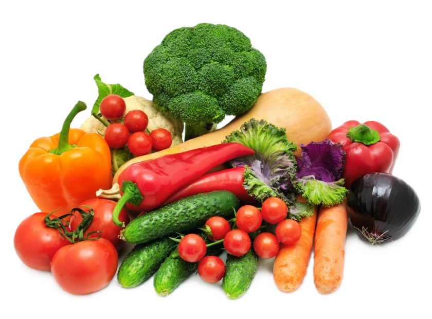
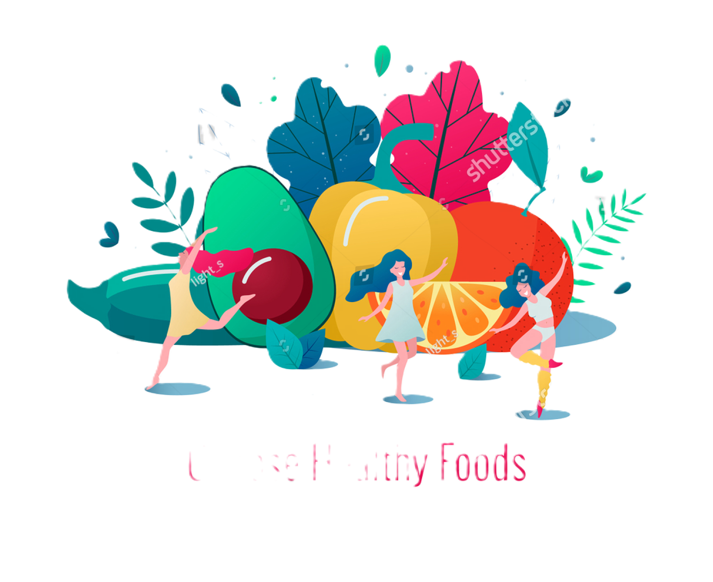

Vegetables
Embrace vitality and wellness with the colorful abundance of nature's gifts

Vegetables are not just nature's sweet indulgence; they are powerhouses of nutrients essential for our well-being. With their vibrant colors, enticing flavors, and array of health benefits, fruits play a crucial role in maintaining a balanced and nourished life. First and foremost, fruits are rich in vitamins, minerals, and antioxidants that support our immune system, helping us ward off illnesses and diseases. From vitamin C in citrus fruits to potassium in bananas, each fruit offers a unique blend of nutrients that contribute to our overall health.
Moreover, Vegetables are packed with fiber, which aids in digestion, regulates blood sugar levels, and promotes a healthy weight. Consuming a variety of fruits ensures a diverse intake of fiber, keeping our digestive system functioning optimally. Beyond their nutritional value, fruits are also hydrating and refreshing, making them ideal snacks to beat thirst and satisfy hunger. Their natural sugars provide a quick energy boost without the crash associated with processed snacks, making them perfect for maintaining energy levels throughout the day.
Furthermore, incorporating Vegetables into our diet promotes heart health by reducing the risk of cardiovascular diseases. The potassium, fiber, and antioxidants found in fruits help lower blood pressure, cholesterol levels, and inflammation, thereby supporting a healthy heart. In addition to their physical benefits, Vegetables contribute to mental well-being by enhancing mood and cognitive function. The vitamins and minerals in fruits play a vital role in brain health, improving concentration, memory, and overall mental clarity.
In conclusion, the importance of fruits in our lives cannot be overstated. From boosting immunity to promoting digestion, heart health, and mental well-being, fruits offer a myriad of benefits that contribute to a balanced and vibrant life. Let us embrace the abundance of nature's gifts and make fruits a cornerstone of our daily diet for a healthier, happier tomorrow.
Thanks for visting our web site 😁Go to the HOME page
 :
signe.iriss@gmail.com
:
signe.iriss@gmail.com